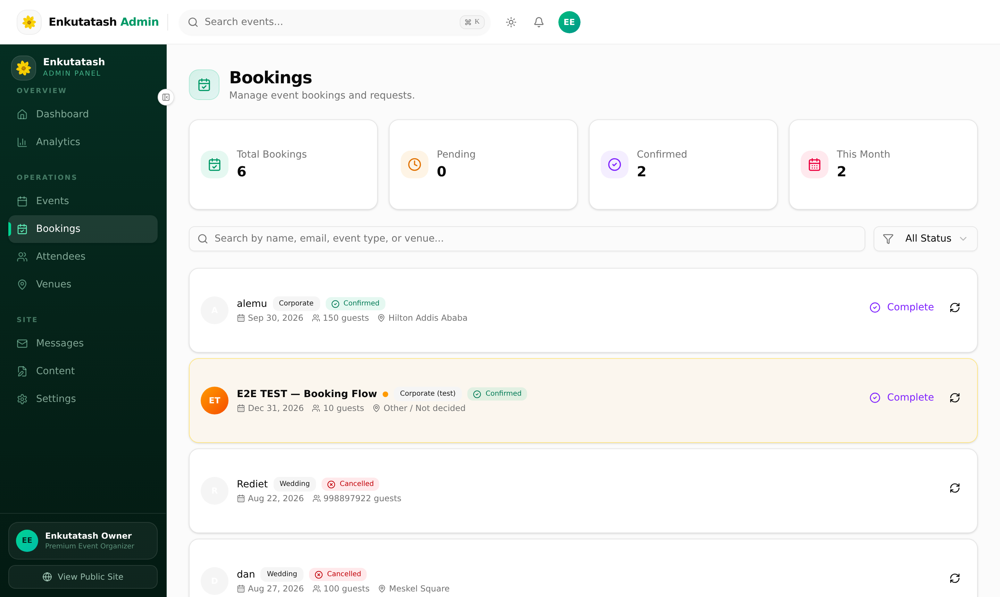
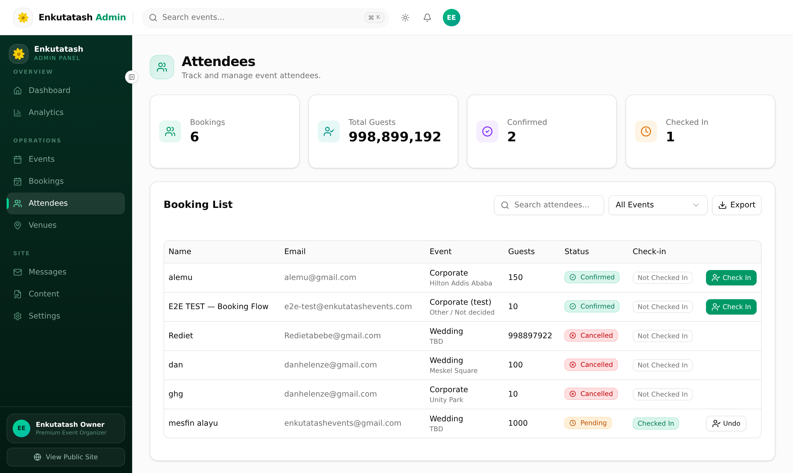
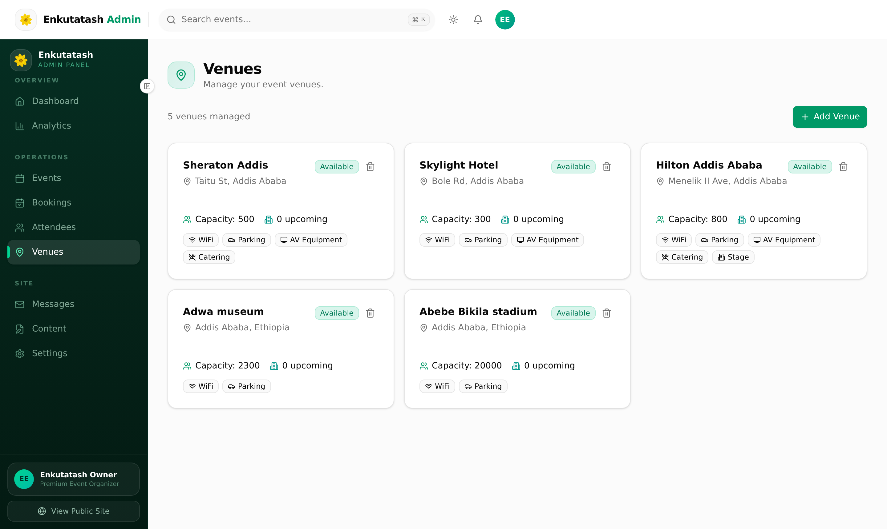
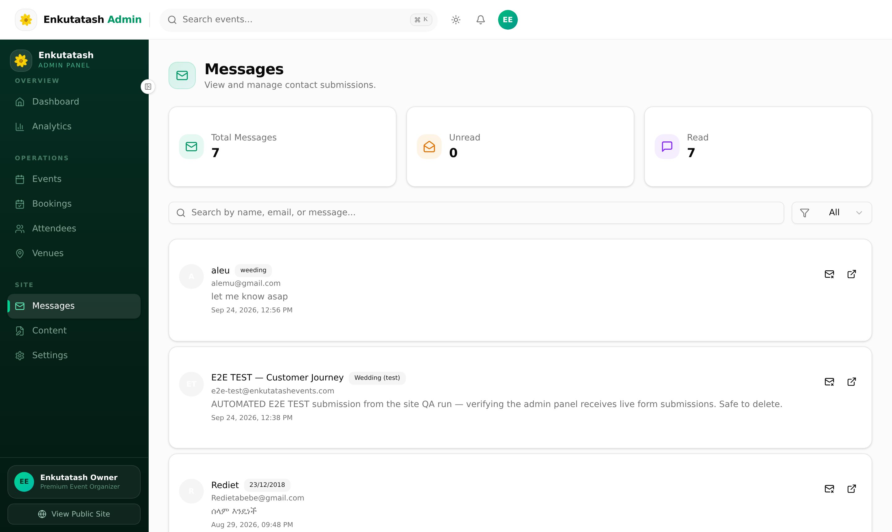
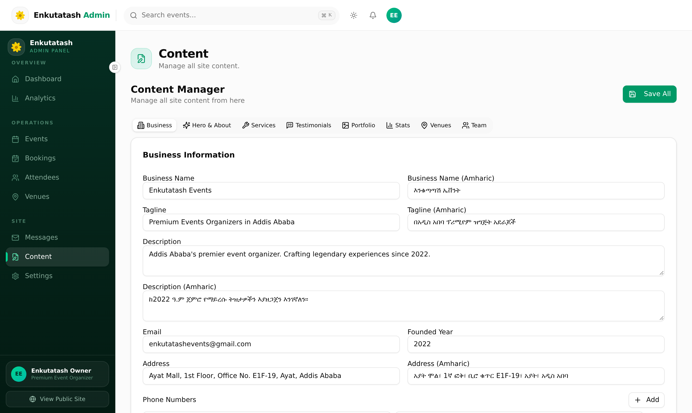
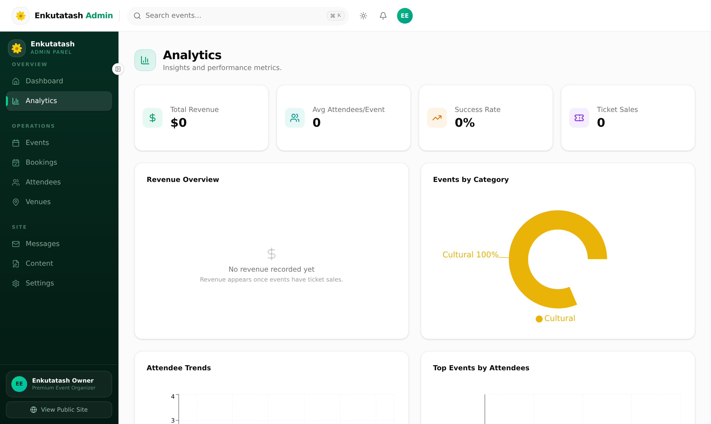
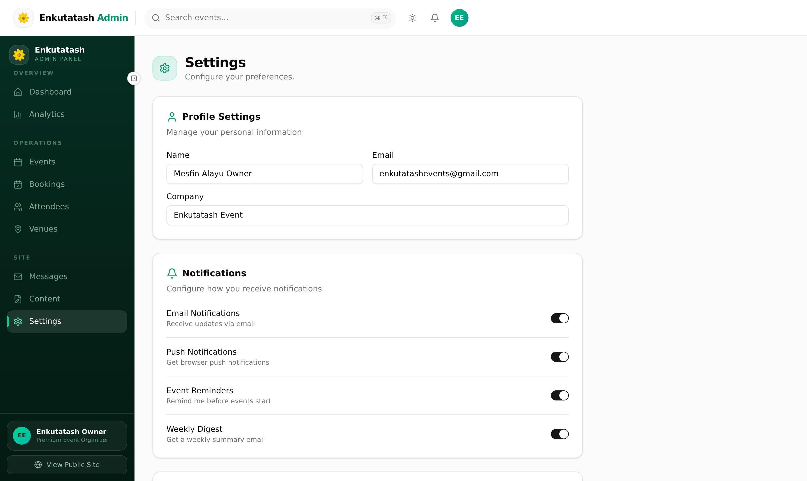
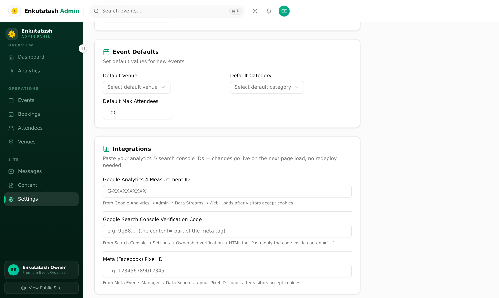
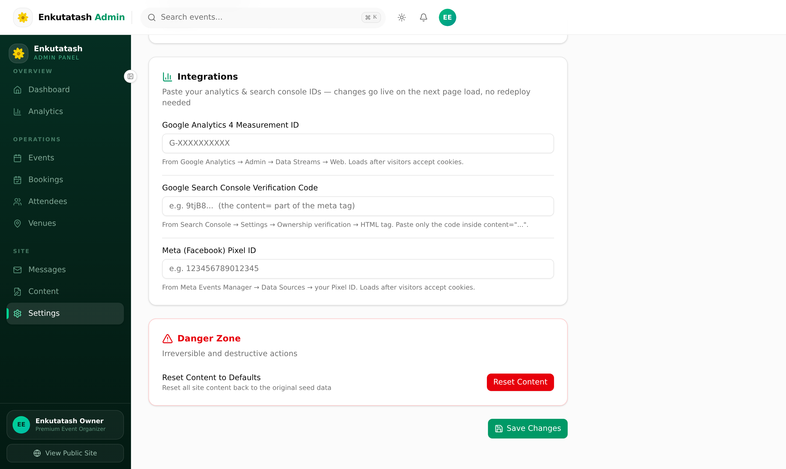

Welcome to Your Website's Control Room
Congratulations on your new website. This manual was written for one reader: you, the owner of Enkutatash Events. It assumes no technical background — every instruction is written in everyday language, one step at a time, exactly in the order you should click.
Your website has two faces. The first is the public site at enkutatashevents.com, which visitors see: your services, portfolio, testimonials, and contact forms. The second is the admin panel — a private control room hidden behind a password — where you manage everything the public sees. Nothing on the public site changes by accident; it only changes when you make a change here.
The admin panel lives at enkutatashevents.com/admin. Inside, a sidebar on the left gives you nine sections: Dashboard, Analytics, Events, Bookings, Attendees, Venues, Messages, Content, and Settings. Each chapter of this manual walks through one section, one task at a time. You do not need to read it cover to cover — jump to the chapter that matches what you want to do today.
Every change you make in the admin panel appears on the public website after you press Save. If you ever make a mistake, simply open the same screen, correct it, and save again. Almost nothing here is permanent — you can always edit, replace, or delete later.
Logging In and Out
The admin panel is protected by a single password — there is no username to remember. Your password was given to you privately when the website was handed over. Keep it somewhere safe, such as a password manager or a written note kept in a secure place.
2.1 Signing in
- Open your browser (Chrome, Edge, Safari, or Firefox) and go to enkutatashevents.com/admin.
- You will see the sign-in screen below — a single Password box and a green Sign In button.
- Type your password. Click the small eye icon if you want to double-check what you typed.
- Press Sign In. If the password is correct you land on the Dashboard immediately. If it is wrong, the screen says Invalid password — simply try again.

2.2 Staying signed in — and signing out
After you sign in, the website remembers you on that device for seven days. You can close the browser, shut the laptop, come back tomorrow — you will still be signed in. After seven days you are asked to sign in again. This keeps the site convenient for you but still safe from strangers using your computer.
When you finish working — especially on a shared or public computer — always sign out. Scroll to the very bottom of the left sidebar and press Sign out. The next person who opens the admin address will be asked for the password, not your data. Right above it there is also a View Public Site button that opens the public website in a new tab, handy for checking how your changes look to visitors.
There is no "forgot password" link on the sign-in screen — by design, so hackers cannot abuse it. Chapter 12 explains exactly how to set a new password, either by yourself through the Cloudflare dashboard or with one phone call to your developer.
The Dashboard — Your Morning Overview
The Dashboard is the first thing you see after signing in. It is not for editing — it is a live summary, like the front page of your business. In a single glance it answers the four questions owners ask most: how many events do I have, how many attendees are coming, what is coming up next, and how much ticket revenue is expected.

Across the top sit four summary cards: Total Events (with a small note of how many are upcoming versus completed), Total Attendees across all events, Upcoming Events with the nearest date, and Est. Revenue calculated from ticket prices × attendees on your published events.
Below the cards, the left panel lists your Upcoming Events — each with its date, venue, attendee count, price, and a View Details button that jumps straight to that event's record. On the right, a small calendar shows the current month; days holding an event are highlighted, and you can page through months with the arrows. Beneath it, Recent Messages shows the latest contact-form submissions so a new enquiry never goes unnoticed. Clicking View All beside either panel takes you to the full Events or Messages screen.
Managing Events
The Events section is where your happenings live — cultural celebrations, weddings, corporate gatherings, ticketed shows. Everything you create here can appear on the public site and accept bookings. Open it by clicking Events in the sidebar.

4.1 Creating a new event
- In the Events screen, press the green Create Event button at the top right.
- A dialog opens. Fill in the basics: event name, date and time, venue, a short description, and the category (Cultural, Wedding, Corporate, and so on).
- Add a ticket price if the event is paid, or leave it free. Set the capacity — the maximum number of attendees you will accept.
- Choose a status: Draft keeps it hidden from the public while you prepare; Upcoming publishes it to the site; Completed marks it as finished.
- Press Create Event at the bottom of the dialog. The event now appears in your list — and on the public site if its status is Upcoming.

4.2 Editing, hiding, or removing an event
Every row in the Events table has an Edit action that reopens the same dialog with the details filled in — change what you need and save. Use the search box at the top to find an event by name, and click the column headings (Event, Date, Attendees) to sort the list. To take an event off the public site without deleting your work, edit it and switch its status to Draft — it disappears from the public site instantly but stays in your admin list. Deletion is only for events you never want to see again, so the button asks you to confirm first.
Handling Bookings
When a visitor requests a seat at one of your events — or asks you to organize one — the request lands in Bookings. This is your work queue: every entry shows who is asking, for which event or service, how many people, and any message they left. Click Bookings in the sidebar to open it.

Each booking carries a status that tells you, at a glance, where it stands: Pending (new, waiting for your decision), Confirmed (accepted — you are committing to serve it), Cancelled (the client withdrew), or Completed (delivered and closed). Open a booking to read the full details, then use the action buttons to move it through its life. The Dashboard counts pending bookings for you, so an unanswered request never hides for long.
- Open Bookings from the sidebar and click the booking you want to work on.
- Read the client's name, contact details, event, party size, and message carefully.
- Press Confirm to accept, or Decline if you cannot serve it — the status updates instantly.
- Reach out to the client directly by phone or email to continue the conversation; the admin keeps the record, not the correspondence.
Review your Bookings at the start of every day. Clients judge responsiveness — a request answered within hours reads as a company that cares. The Dashboard's pending count is your friend.
Managing Attendees
Attendees are the individual people attached to your events — guests who registered, ticket holders, VIP invitees. The Attendees screen gives you one table listing everyone, which event they belong to, and their registration details. Use it to plan catering, seating, and check-in without spreadsheets.

The table can be filtered by event, so during a busy week you can look at just one occasion at a time. Search by name when a guest calls and asks whether their registration went through. Add attendees manually when someone registers by phone or in person — press the add button, fill in their name, email, phone, and the event they are joining, and save. If a guest cancels, remove or update their record so your head-count stays accurate; the Dashboard's attendee totals read directly from this list.
Managing Venues
Venues are the places where your events happen — hotel ballrooms, gardens, conference halls, cultural sites. Keeping this list tidy matters, because when you create an event you pick its venue from this list, and the venue's name appears on the public event page.

- Open Venues from the sidebar to see all current venues as cards.
- To add one, press the Add Venue button and fill in the venue name, address or area, and capacity.
- To correct a spelling, a capacity, or an address, press Edit on the venue's card, change the field, and save.
- If you no longer work at a place, you can remove it — events already attached to it keep their records, but new events will no longer offer it as a choice.
Reading Messages
Every visitor who fills in the contact form on your website becomes a Message here — enquiries about weddings, cultural events, ticket questions, partnership offers. Click Messages in the sidebar to see your inbox. Unread messages are marked with a badge both in the list and on the sidebar itself, so new enquiries are impossible to miss.

- Open Messages and click a message to read the sender's name, email, and full text.
- Reply using your own email or phone — the admin panel stores and organizes enquiries; it does not send replies.
- Mark the message as read after handling it, so your unread count reflects reality.
- Delete spam or duplicate submissions with the delete action — the Dashboard's Recent Messages panel then shows only genuine enquiries.
Editing Your Website Content
This is the most powerful section of the admin panel. Everything the public reads on enkutatashevents.com — your company description, services, testimonials, portfolio, statistics, venues, and team — is controlled from Content. The screen is organized into eight tabs, one for each part of the public site. Switch tabs, edit the fields, and the website reflects your words after you save.

| Tab | What you control there |
|---|---|
| Business | Company name, tagline, contact details, address, working hours, and social media links shown in the site's header and footer. |
| Hero & About | The big headline and welcome text on the homepage, the About section that tells your story, and its accompanying image. |
| Services | The list of services you offer — title, description, icon, and the order they appear in. |
| Testimonials | Client quotes: the words, the client's name, and their role or company. |
| Portfolio | Photos of past events — the gallery that sells your work. |
| Stats | The numbers you proudly display, such as events organized, happy clients, and years of experience. |
| Venues | The public showcase of venues you work with, separate from the operational venue list in Chapter 7. |
| Team | Your people: name, role, photo, and short biography. |
9.1 Editing any text on the site
- Open Content from the sidebar and click the tab that matches the section you want to change.
- Click into the field and type your new text — it works like filling in a form.
- Press Save (or Save All if you changed several tabs) at the top of the screen.
- Check the result: press View Public Site at the bottom of the sidebar, then refresh the page to see your words live.
9.2 Adding a portfolio photo
Your portfolio is what convinces future clients, so keep it fresh after every successful event. Photos should be landscape-oriented, bright, and at least 1200 pixels wide; phone photos are perfectly fine.
- Open Content and switch to the Portfolio tab.
- Press the Add Photo (or upload) button — a file picker opens.
- Choose the photo from your computer, then give it a short caption — the event name and place work well, for example "Meskel Celebration · Sheraton Addis".
- Save. The photo appears in the public gallery. To reorder the gallery, drag the photos into your preferred sequence; to remove one, press its delete icon and confirm.
Read your text once more, out loud if you can. The website publishes exactly what you type — including typos. Saved changes go live immediately; there is no separate "publish" step to catch you.
Understanding Analytics
Analytics answers the owner's favourite question: is the website actually working? Click Analytics in the sidebar and you get visitor numbers and trends without any technical setup; the panel collects and summarizes the data for you.

The cards at the top show total visitors and page views, with smaller comparisons against the previous period so you can tell whether interest is growing. A chart underneath plots visits over time — look for spikes after you post a new event or share the site on social media, because that connection is exactly how marketing starts to make sense. Further down, a breakdown by page shows which parts of your site attract the most attention: if your Services page dwarfs everything else, visitors are shopping; if the Gallery leads, your photos are doing the selling.
For deeper, industry-standard measurement you can link a free Google Analytics 4 property. Open Settings, scroll to Integrations, and paste your GA4 Measurement ID (it looks like G-XXXXXXXXXX). Chapter 11 shows the screen.
Settings
Settings is where preferences live: your admin profile, notification choices, the panel's appearance, sensible defaults for new events, and integrations with Google's measurement tools. Most owners visit rarely — set things once and let them be. Click Settings in the sidebar.

Profile Settings holds your display name and email — what the panel calls you. Notifications lets you choose what you are alerted about, such as new bookings or new messages. Appearance switches the panel between light and dark display, purely a matter of taste. Event Defaults pre-fills sensible values (default capacity, default category) so creating events takes fewer clicks.
11.1 Integrations — Google Analytics & Search Console
Scroll down for the Integrations card. Paste a GA4 Measurement ID to connect Google Analytics, and a Search Console verification value to prove ownership of the site to Google. Both are copy-paste jobs — if you do not have the values yet, ask whoever manages your Google account, or leave them empty; the site works perfectly without them.

11.2 The Danger Zone — please read before touching
At the very bottom of Settings sits the Danger Zone with a red Reset Content action. This wipes the site's content back to factory defaults — every headline, testimonial, portfolio photo, and team member you have customized would be replaced by the original template text. It exists for emergencies only. Do not use it for routine fixes; there is nothing there you will ever need in day-to-day ownership.

Changing the Admin Password
There is no "change password" screen inside the admin panel — the password deliberately lives one level higher, in your website's hosting account, where no hacker who steals your browser can reach it. Your site is hosted on Cloudflare, a free account created for you during handover. You can change the password yourself in a few minutes, or simply ask your developer to do it.
12.1 Option A — do it yourself via the Cloudflare dashboard
- Go to dash.cloudflare.com and sign in with the Cloudflare account email and password you were given at handover.
- Click your domain, enkutatashevents.com, in the list of websites.
- In the left menu choose Workers & Pages, then click your website's worker (its name contains enkutatash).
- Open the Settings tab, then find Variables and Secrets and press Edit.
- Find the variable named OWNER_PASSWORD. Click its value, type your new password, and press Save (or Deploy if asked).
- Wait about a minute, then test: open enkutatashevents.com/admin in a private browser window and sign in with the new password.
Changing OWNER_PASSWORD locks out new sign-ins with the old password. Devices already signed in stay trusted for up to seven days, because that is how long each session lives. If you need everyone out immediately — for example if a device was stolen — tell your developer, who can clear all sessions at once.
12.2 Option B — ask your developer
If the Cloudflare dashboard feels intimidating, that is completely fine. Send your developer a message saying: "Please change my admin password to the one I am sending separately." Send the new password through a different channel than the request itself — for example, request by email and password by phone or WhatsApp. The change takes the developer only a minute or two.
12.3 Choosing a strong password
A strong password is long more than it is complicated. Aim for at least 14 characters. Three random words work beautifully — sunrise-coffee-Addis-94 is easy for you to remember and miserable for a computer to guess. Avoid birthdays, company names, and anything you use on other websites. Write it down and store it with your other important papers, or keep it in a password manager.
Seven Habits of a Safe Website Owner
Your website is a business asset, and like your cash box, it mostly needs common sense. These seven habits cover everything that matters — none of them require technical skill.
| Habit | Why it matters |
|---|---|
| 1 · Guard the password | Share it only with people who truly need it, and never send it in the same message as the request that asks for it. |
| 2 · Sign out on shared computers | The seven-day remember-me is a convenience on your own laptop and a risk in an internet café. |
| 3 · Change the password a few times a year | Chapter 12 makes it a five-minute job. After any staff change or shared-password incident, change it that day. |
| 4 · Pause before deleting | Deletes in the admin panel are real. When a confirm dialog appears, read it — it is the one place the site asks "are you sure?" |
| 5 · Keep the Danger Zone alone | Reset Content erases your customized text and photos. No routine problem is ever solved there. |
| 6 · Read your Dashboard daily | A one-minute glance catches new messages, pending bookings, and anything odd long before clients notice. |
| 7 · Call for help early | If something looks wrong — a strange screen, an error, a lockout — contact your developer sooner rather than later. Small problems stay small when reported early. |
"I want to…" Cheat Sheet
Tear out this page (or bookmark it) — it compresses the whole manual into one table.
Keep this manual where you can reach it — printed on your desk or bookmarked in your browser. When a new team member joins, walk them through Chapters 2 and 13 first. And whenever you feel unsure, your developer is one message away; no question about your own website is ever too small.